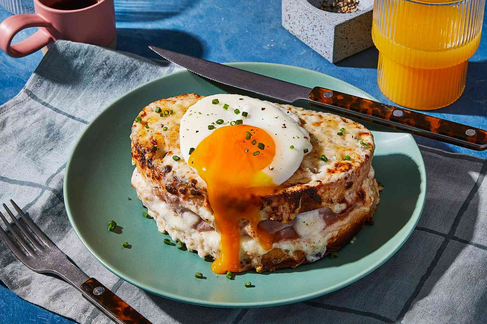

Croque Madame

Description
The Croque Madame is a classic French café-style sandwich made with slices of toasted bread, layered with ham and melted Gruyère cheese.
It is generously topped with a smooth béchamel sauce and crowned with a fried or poached egg,
which gives the sandwich its name—“Madame” referencing the egg resembling a lady’s hat.
It’s a rich, satisfying dish perfect for brunch or a light lunch.
Ingredients
- 4 slices of white bread
- 2 slices of ham
- 1 cup shredded Gruyère or Emmental cheese
- 1 tablespoon butter (for toasting)
- 2 eggs
- Salt and pepper
For the Béchamel Sauce:
- 1 tablespoon butter
- 1 tablespoon all-purpose flour
- 3/4 cup milk
- A pinch of nutmeg
- Salt and pepper
Instructions
- Make the béchamel:
melt butter, whisk in flour, then slowly add milk, stirring constantly until thick. Season with nutmeg, salt, and pepper.
- Lightly toast the bread slices.
- Assemble: bread → béchamel → ham → cheese → bread. Spread more béchamel and cheese on top.
- Grill or bake the sandwiches at 200°C (400°F) for about 5–7 minutes until the top is golden and bubbly.
- In a skillet, fry two eggs.
- Place a fried egg on top of each sandwich. Serve warm
Top Page
Main Page